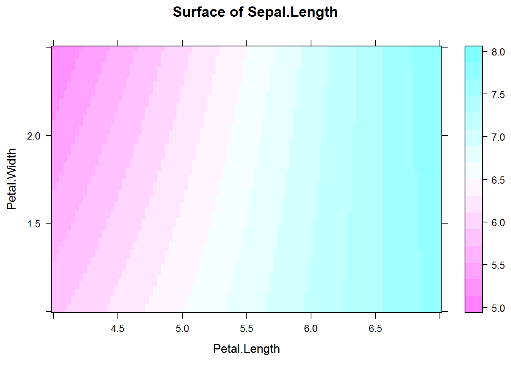

Capítulo 9 Modelo de regresión lineal
Recordemos el algebra del modelo de regresion lineal:
\[\begin{aligned} y = \alpha + \beta x + \epsilon \end{aligned}\]donde α y β son parametros del modelo y ϵ el error del modelo.
α corresponde al intercepto
β corresponde al coeficiente de x (pendiente).
cuando β = 0, no hay relación significativa entre las variables x y y.
9.1 Regresión lineal simple
Usaremos el set de datos iris para realizar una regresión lineal entre la longitud del pétalo y la longitud del sépalo.
##
## Call:
## lm(formula = Sepal.Length ~ Petal.Length, data = iris)
##
## Residuals:
## Min 1Q Median 3Q Max
## -1.24675 -0.29657 -0.01515 0.27676 1.00269
##
## Coefficients:
## Estimate Std. Error t value Pr(>|t|)
## (Intercept) 4.30660 0.07839 54.94 <2e-16 ***
## Petal.Length 0.40892 0.01889 21.65 <2e-16 ***
## ---
## Signif. codes: 0 '***' 0.001 '**' 0.01 '*' 0.05 '.' 0.1 ' ' 1
##
## Residual standard error: 0.4071 on 148 degrees of freedom
## Multiple R-squared: 0.76, Adjusted R-squared: 0.7583
## F-statistic: 468.6 on 1 and 148 DF, p-value: < 2.2e-16library(ggplot2)
ggplot(model1, aes(x=Petal.Length, y=Sepal.Length)) + geom_point() +
geom_smooth(method = "lm") # try geom_smooth()9.1 Ejercicio:
Discuta e interprete los coeficientes del modelo.
Ahora utilizaremos el modelo que hemos calculado para predecir cómo se comporta la longitud del sépalo cuando la longitud del pétalo esta entre 2 y 4.
newdato <- data.frame (Petal.Length = seq (2, 4, by = 0.1))
predict(model1, newdata = newdato) # predice sepalo cuando petalo es de 4 a 7## 1 2 3 4 5 6 7 8
## 5.124448 5.165340 5.206232 5.247125 5.288017 5.328909 5.369801 5.410694
## 9 10 11 12 13 14 15 16
## 5.451586 5.492478 5.533370 5.574262 5.615155 5.656047 5.696939 5.737831
## 17 18 19 20 21
## 5.778724 5.819616 5.860508 5.901400 5.9422939.1 Ejercicio:
Use el modelo para predecir el sepalo cuando el petalo tiene un valor de 7 o mas
9.2 Regresión lineal con 2 o mas predictores
Ahora haremos las cosas un poco más complejas (sin que sean difíciles) para entender que sucede cuando hay dos o más predictores de la forma:
\begin{aligned} y = +{1} + {2} + \end{aligned}
Usaremos mas (+) para combinar efectos. Dos puntos (:) para interacciones A:B; y asterisco () para efectos e interacciones, ej AB = A+B+A:B
##
## Call:
## lm(formula = Sepal.Length ~ Petal.Length * Petal.Width, data = iris)
##
## Residuals:
## Min 1Q Median 3Q Max
## -1.00058 -0.25209 0.00766 0.21640 0.89542
##
## Coefficients:
## Estimate Std. Error t value Pr(>|t|)
## (Intercept) 4.57717 0.11195 40.885 < 2e-16 ***
## Petal.Length 0.44168 0.06551 6.742 3.38e-10 ***
## Petal.Width -1.23932 0.21937 -5.649 8.16e-08 ***
## Petal.Length:Petal.Width 0.18859 0.03357 5.617 9.50e-08 ***
## ---
## Signif. codes: 0 '***' 0.001 '**' 0.01 '*' 0.05 '.' 0.1 ' ' 1
##
## Residual standard error: 0.3667 on 146 degrees of freedom
## Multiple R-squared: 0.8078, Adjusted R-squared: 0.8039
## F-statistic: 204.5 on 3 and 146 DF, p-value: < 2.2e-16library(lattice)
newdato<-expand.grid(list(Petal.Length = seq(4, 7, length.out=100),
Petal.Width=seq(1, 2.5, length.out=100)))
newdato$Sepal.Length<-predict(model1a, newdata = newdato) # predice sepalo con petalo de 4 a 7 y 1 a 2.5
levelplot(Sepal.Length~Petal.Length + Petal.Width, data=newdato,
xlab = "Petal.Length", ylab = "Petal.Width",
main = "Surface of Sepal.Length")
9.2 Ejercicio:
Cambie el rango de la predicción de 2 a 8 Cambie en el modelo la interacion de las covariables a +